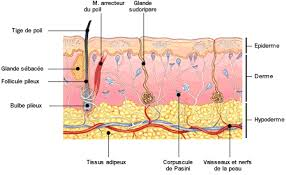

Les plaies chroniques : l'escarre
Definition
Les
stades de destruction de l'escarre
Les
stade de reconstruction de l'escarre
Prevention des escarres
Traitements des
escarres
Les differents pansements et
leurs proprietes
Risques et
complications
Surveillances et
evaluations
Definition
Une
escarre est une necrose tissulaire consecutive e une ischemie par
compression arteriolaire prolonge entre deux plans durs et qui evolue
par etape.
Cadre legislatif
- Prevention et surveillance relevant du
rele propre : art. R.4311-5 decret 2004-802 du 29/07/2004.
- Traitement relevant d'une prescription
medicale : art. R.4311-7 decret 2004-802 du 29/07/2004.
Les
differents stades de destruction et
de reconstruction
|
Les stades de
destruction de l'escarre |
|
Stade 0 |
absence
de rougeur |
|
Stade 1 |
erytheme
reversible |
|
Stade 2 |
erytheme
persistant, phlyctene, desepidermisation |
|
Stade 3 |
necrose :
plaque noire seche puis suintante |
|
Stade 4 |
ulceration
: decollement de la plaque noire, necrose ouverte, visualisation de l'os |
|
Stades de
reconstruction de l'escarre |
|
Stade 0
(noir) |
necrose |
|
|
Stade 1
(jaune) |
detersion : elimination des tissus |
|
|
Stade 2
(rouge) |
bourgeonnement, retrecissement des bords de
l'escarre |
|
|
Stade 3
(rose) |
epidermisation |
|
Processus physiopathologique
L’escarre
est du e une ischemie provoque par la compression de la
microcirculation qui est formee par des arterioles et veinules. Cette
ischemie entraene une necrose des tissus.
- Aux niveau des arterioles on observe une
diminution du flux sanguin et donc de l’apport en oxygene (hypoxie) et
diminution des apports des elements nutritifs.
- Aux niveaux des veinules on observe une
diminution du flux sanguin ce qui entraene une accumulation des
metabolique toxique : CO2 et produits de degradation
des matieres organiques.

Facteurs favorisant l'apparition des
escarres
L’escarre
est un effet de complication de l’alitement et de l’immobilisation
prolongee.
Facteurs extrinseques
Les
facteurs extrinseques sont lies e l’environnement materiel et
personnel : ce sera la compression prolongee sur les memes
points d’appuis, le cisaillement, le frottement ou la friction.
Ces effets
sont dus au ramollissement de la peau par la maceration induite soit
par la transpiration, les souillures, l’absence de protection sur les
fauteuils, la presence de materiels : sonde, vetements.
Facteurs lies e l’etat general
Les
facteurs de l’etat general sont :
- L’ege : les personnes egees ont
une diminution de la masse musculaire.
- La cachexie : maigreur
importante.
- L’obesite.
- La deshydratation.
- La denutrition.
- L’hyperthermie : toute
elevation de 3e au-dessus de 37e entraene une diminution de 50% de la
resistance des tissus.
- L’incontinence.
Facteurs intrinseques
Les
facteurs intrinseques sont lies aux pathologies que presentent les
patients.
- Abolition des mouvements trophiques de
sauvegarde : coma, paralysies.
- Troubles circulatoires.
- Hypotension.
- Troubles metaboliques :
hypercholesterolemie, diabete.
- Troubles de l’oxygenation.
- Pathologies au stade terminal.
- Pathologies suscitant un alitement ou
immobilisation prolongee.
Prevention
des escarres
Materiel
- Huile de massage type huile d'amande
douce.
- Matelas anti-escarres.
- Coussins, boudins.
Realisation du soin
- Changer de position toutes les 3 e 4
heures en repartissant au maximum
les points d'appuis.
- Stimuler la circulation en realisant des
massages doux avec des corps
gras : effleurage des points d'appuis par des mouvements circulaires
sans appuyer.
- Installer le patient sur un matelas
anti-escarre : matelas e fibres, e
mousses.
- Installer des coussins et boudins pour
diminuer les points de pressions.
- Effectuer des changes frequents pour
eviter la maceration et maintenir
l'hygiene cutanee.
- Favoriser l'hydratation et une
alimentation saine et adaptee.
Traitements
des escarres
Regles
generales pour tout escarre.
Soins pour un erytheme
persistant.
Soins pour une phlyctene.
Soins pour une
desepidermisation.
Soins pour une necrose.
Soins pour une
plaie fibrineuse non exsudative.
Soins pour une
plaie fibrineuse exsudative.
Soins pour une plaie
bourgeonnante.
Soins pour une epidermisation.
Soins pour une plaie
hemorragique.
Soins pour une plaie infectee.
Soins pour une plaie odorante.
Materiel
- Gants non steriles e usage unique.
- Serum physiologique isotonique (ne pas
utiliser d'eau sterile car douloureux).
- Compresses steriles.
- Bistouri sterile.
- Protection absorbante e usage unique.
- Pansements en fonction de la clinique de
l'escarre et de leurs
proprietes :
| Les pansements |
| Types |
Proprietes |
| Hydrogel |
- detersion
- hydrate les tissus et les plaies
seches (teneur en eau > 90%)
- absorbe les debris necrotiques et
fibrineux
|
| Hydrocolloede |
- favorise la cicatrisation
- maintien un milieu humide : se
transforme au contact des exsudats en un gel cohesif qui
n'adhere pas e la plaie
- protege les tissus neoformes :
permet les echanges gazeux et la protection de la plaie
- assure un climat chaud et humide
favorisant la croissance bacterienne : favorise la phagocytose
- facilite une detersion non
douloureuse favorisant le bourgeonnement
|
| Hydrocellulaire |
- mousse qui absorbe et retient les
exsudats
- favorise la cicatrisation :
maintien d'un milieu humide sans maceration (pas de formation de gel)
- protege : effet coussin
anti-pression, evite le creusement de la plaie
|
| Alginates de calcium |
- draine les plaies tres exsudatives
- hemostatique
- creer un milieu humide favorable e
la cicatrisation en formant un gel cohesif
|
| Pansement gras |
- favorise la detersion physiologique
|
| Pansement e l'argent |
- effet bacteriostatique et
bactericide
|
| Pansement au charbon |
|
- Protection papier absorbante e usage
unique.
- Sac e elimination des dechets papier et
materiel non contamine.
- Sac e elimination des
dechets d'activites de soins e risques infectieux.
- Desinfectant de surface et chiffonnette.
- Necessaire e l'hygiene des mains.
Realisation
du soin : regles generales pour tout escarre
- Prevenir le patient.
- Effectuer un lavage simple des mains ou
effectuer un traitement hygienique des mains par frictions avec une
solution hydro-alcoolique : hygiene
des mains.
- Installer le materiel apres verification
des dates de peremptions et de l'integrite des emballages.
- Installation sur une surface propre et
desinfectee au prealable.
- Installer les poubelles de tri des
dechets au pied du lit du patient.
- Respecter le triangle d'hygiene, de
securite et d'ergonomie : Propre
(materiel) – Patient – Sale (poubelles).
- Preparer des compresses steriles
imbibees de serum physiologique et des
compresses steriles seches.
- Installer confortablement le patient.
- Mettre la protection sur les draps pour
proteger en cas d'ecoulement de
la plaie.
- Mettre les gants e usage unique.
- Enlever le pansement recouvrant
l'escarre, l'eliminer, et jeter les
gants.
- Effectuer un lavage antiseptique des
mains ou
effectuer un traitement hygienique des mains par frictions avec une
solution hydro-alcoolique : hygiene
des mains.
- Mettre les gants non steriles.
Il ne s'agit pas d'un soin sterile mais d'un
soin propre, il faut donc
rester le plus propre possible.
- Nettoyer l'escarre avec les compresses
steriles imbibees de serum
physiologique.
- Secher le pourtour de la plaie avec les
compresses steriles seches. Ne
pas secher la plaie afin de preserver le milieu humide.
- Evaluer l'evolution de la plaie :
taille, profondeur, aspect, odeur.
- Appliquer le pansement en fonction du
stade d'evolution de la plaie.
- Eliminer les dechets et desinfecter le
materiel utilise ainsi que le
plan de travail.
- Effectuer un lavage simple des mains ou
effectuer un traitement hygienique des mains par frictions avec une
solution hydro-alcoolique : hygiene
des mains.
- Transmission : aspect de la plaie,
taille, profondeur, odeur,
coloration des tissus, exsudats, etat cutanee autour de la plaie,
reaction du patient (douleur).
Realisation
du soin pour un erytheme persistant
- Mettre un pansement hydrocolloede
transparent qui permet d'evaluer
regulierement l'etat cutane.
- Arreter les massages.
- Lever la pression par un matelas
anti-escarre, un coussin ou la mise
dans le vide de la zone lese.
Realisation
du soin pour une phlyctene
Objectifs :
bourgeonnement,
reepidermisation et cicatrisation
- Vidanger sterilement l'ampoule.
- Ne pas decouper la peau, la conserver en
l'utilisant comme protection
naturelle.
- Mettre un pansement hydrocolloede
ou un pansement gras.
Realisation
du soin pour une desepidermisation
Objectifs :
bourgeonnement,
reepidermisation et cicatrisation
- Mettre un pansement hydrocolloede
ou mettre un pansement
gras.
Realisation
du soin pour une necrose
Objectif :
hydrater et deterger
- Ramollir la necrose : mettre un pansement hydrogel
ou pansement e l'alginate
imbibe de serum physiologique recouvert d'un pansement impermeable.
- Deterger car les tissus necroses
retardent la cicatrisation.
- Detersion mecanique en excisant la
plaque de necrose
- Detersion par pansement hydrocolloede
qui permet de ramollir puis
decoller la plaie.
Realisation
du soin pour une plaie fibrineuse non exsudative
Objectifs :
deterger et drainer
- Enlever la fibrine pour faciliter le
bourgeonnement.
- Mettre un pansement hydrogel
pour deterger et absorber les debris fibrineux.
- Recouvrir d'un pansement hydrocolloede
transparent.
- Possibilite d'appliquer directement un
pansement hydrocolloede s'il n'y
a pas beaucoup de
fibrines.
Realisation
du soin pour une plaie fibrineuse exsudative
Objectifs :
deterger et drainer
- Enlever la fibrine pour faciliter le
bourgeonnement.
- Mettre un pansement :
- Hydrocellulaire
si exsudation modere.
- A l'alginate
de calcium et recouvert d'un pansement absorbant si
exsudation abondant.
Realisation
du soin pour une plaie bourgeonnante
Objectifs :
absorber et proteger
- Mettre un pansement hydrocellulaire
dont la mousse absorbe les exsudats
et forme un coussinet protecteur.
Realisation
du soin pour une epidermisation
Objectif :
proteger
- Mettre un pansement hydrocellulaire
dont la mousse forme un coussinet
protecteur.
Realisation
du soin pour une plaie hemorragique
Objectifs :
drainer, stopper
les saignements
- Mettre un pansement e l'alginate de calcium
pour sa propriete
hemostatique.
Realisation
du soin pour une plaie infectee
Objectifs :
contreler la
proliferation bacterienne, drainer et proteger
- Mettre un pansement e l'argent
pour sa propriete bacteriostatique et
bactericide.
Realisation
du soin pour une plaie odorante
Objectif :
masquer les odeurs
- Mettre un pansement au charbon
pour sa propriete d'absorber es odeurs.
Risques
et complications
- Infection.
- Aggravation de l'escarre.
Surveillances
et evaluations
- Etat cutane.
- Aspect de la plaie : stade d'evolution,
coloration des tissus, taille,
profondeur, odeur, exsudats.
- Hydratation du patient.
Voir aussi :

 haut
de page
haut
de page